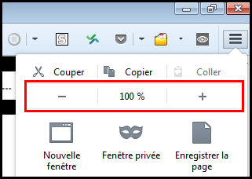

Web développer - Mise en page
S’assurer que la mise en page soit adaptée à l’utilisateur.
Utiliser des tailles relatives et faire du web adaptatif #
Cible : tout le monde, et en particulier les personnes déficientes visuelles, en mobilité et seniors.
Quand : lors du développement.
Description :
N’utiliser pour les tailles de police et pour les éléments conteneurs que des tailles relatives (em, rem, %) permettant l’agrandissement du texte seul de 200%. Globalement faire une interface web adaptative (responsive web design) sauf si la présentation en deux dimensions est nécessaire pour l'usage ou l'utilisation (images, cartes, diagrammes, vidéos, jeux, présentations, tableaux de données et barre d'outils...).
À vérifier :
- Ne pas utiliser le pixel (
px) pour des tailles qui doivent pouvoir s’agrandir si l’on ne zoome que les textes (Internet Explorer ne le permet pas). - Les éléments de formulaire doivent, eux aussi, posséder des tailles relatives pour s’agrandir.
- Penser à rendre fluides les conteneurs des textes afin qu’ils puissent s’agrandir lorsque les textes sont zoomés.
- Dans Firefox, faire Affichage>Zoom>Zoom texte seulement, utiliser les réglages du zoom pour atteindre 200%. Vérifier qu’il n’y a pas de perte d’information (disparition ou chevauchement de texte).
- Le contenu doit s'adapter à la largeur de l'écran, il doit être consultable (sauf besoin particulier : carte, tableau, diagramme...) sans défilement horizontal pour une zone d'affichage (viewport) réduite à 320 pixels CSS de large pour les contenus dont le sens de lecture est horizontal ou sans défilement vertical pour une zone d'affichage (viewport) réduite à 256 pixels CSS de haut pour les contenus dont le sens de lecture est vertical.
Note : 320 pixels CSS est équivalent à un viewport à 1280px CSS avec un zoom global (toute la page) à 400%.

Objectif utilisateur :
Permettre aux utilisateurs (malvoyants, en mobilité, seniors…) d’augmenter la taille du texte et zoomer pour plus aisément accéder à l’information.
Exemple :
Voir l’exemple gestion du zoom, agrandissement de la taille du texte pour plus d’informations.
Référence WCAG :
Permettre d'aérer le texte #
Cible : tout le monde, et en particulier les personnes déficientes visuelles, avec des limitations cognitives (dyslexique) et celles avec un déficit d'attention.
Quand : lors de la conception et du développement.
Si l'utilisateur applique les réglages suivants, le texte doit rester lisible (pas de contenu tronqué, superposé):
- La hauteur des lignes doit pouvoir être ajustée à 1.5 fois minimum la taille de la police de caractères.
- L'espace situé entre deux paragraphes doit pouvoir être ajusté à 2 fois minimum la taille de la police de caractères.
- L'espacement entre les lettres doit pouvoir être ajusté à 0.12 fois minimum la taille de la police de caractères.
- L'espacement entre les mots doit pouvoir être ajusté à 0.16 fois minimum la taille de la police de caractères.
Cela revient à appliquer les styles CSS suivants :
* {
line-height: 1.5!important;
letter-spacing:.12em!important;
word-spacing: .16em !important;
}
p {
margin-bottom: 2em!important;
}
Bookmarklet:
Pour faciliter le test, vous pouvez utiliser le bookmarklet suivant (à glisser dans votre barre de favoris) : Espacement du texte créée par Steve Faulkner.
Objectif utilisateur :
Permettre aux personnes déficientes visuelles et cognitives d'améliorer le confort de lecture.
Référence WCAG :
Assurer un ordre de lecture du contenu compréhensible #
Cible : tout le monde, et en particulier les personnes déficientes visuelles, cognitives ou avec un trouble de l’attention et en mobilité.
Quand : lors du développement.
Description :
Si un sens de lecture spécifique est nécessaire à la bonne compréhension du contenu ou l'utilisation de l'interface, il faut s'assurer que l'ordre d'apparition dans le code HTML permet également l'accès, pour tout utilisateur, au contenu et à l'interface.
À vérifier :
-
Veillez à ce que l’ordre d’apparition des éléments dans le code HTML soit le même que l'ordre de lecture de l'information dans la page, si cet ordre impacte la compréhension du contenu ou la capacité à utiliser l'interface. C'est la solution la plus simple !
-
Même lors d’apparition, de disparition de contenu ou de contenu dynamiquement généré, il faut conserver cet ordre de lecture compréhensible et une interface utilisable.
Objectif utilisateur :
Permettre de comprendre et utiliser le contenu, notamment pour des utilisateurs d'AT qui souvent lisent le contenu dans l'ordre d'apparition dans le code.
Exemple valide :
Un site de presse présente ses articles en trois colonnes. Dans le code, les colonnes sont placées dans le même ordre qu'affiché à l'écran. Dans ce cas, tous les utilisateurs peuvent lire les articles sans difficultés.
Exemple non-valide :
Le menu principal d'un site est présent à toute fin du code source (après le pied de page) mais positionné tout en haut de la page via CSS, il risque de n'être pas perçu par un utilisateur de lecteur d'écran.
Référence WCAG :
Identifier et conserver la cohérence des regroupements et des différentes régions de la page #
Cible : tout le monde et en particulier les personnes déficientes visuelles, cognitives ou ayant des troubles de l’attention.
Description :
Fournir des moyens d’identifier et de distinguer visuellement les différentes parties de la page et assurer la cohérence de ces régions ou regroupements dans toutes les pages.
À vérifier :
- S'assurer que les liens dans le corps du texte sont facilement identifiables visuellement par un autre moyen que la couleur (souligné, gras…) par rapport au reste du texte.
- S’assurer que les mécanismes de navigation sont toujours situés au même endroit dans un ensemble de page.
- S’assurer que les composants et les regroupements qui ont la même fonction sont identifiés (visuellement et sémantiquement) de la même façon.
- S’assurer que les zones de la page sont clairement délimitées (bordures, filets, contraste suffisant…) ou qu’il y a un moyen de distinguer visuellement les groupes (sous-menu, liste déroulante…) ainsi que les différentes régions de la page.
Objectif utilisateur :
Permettre aux utilisateurs d’identifier et localiser les éléments d’interface dans toutes les pages.
Exemple valide :

Ici, l’info bulle (tooltip) est délimitée par une bordure bien visible et suffisamment contrastée, permettant de bien identifier son contenu.
Exemple non-valide :

Il est très difficile d’associer les thèmes (« par région », « par genre »…) et les sous-thèmes en colonnes, d’autant plus que les filets horizontaux sont trop peu contrastés.
Exemple : Les balises HTML5 et landmarks ARIA
Pour donner une structure sémantique aux grandes régions d’une page, on peut utiliser les balises de structure HTML5 (main pour le contenu principal de la page, nav pour la navigation principale, header pour l’entête de page, footer pour le pied de page, aside pour du contenu complémentaire au contenu principal, et d’autres) même si leur support par les technologies d’assistance/navigateurs n’est pas total , il est suffisant. On peut aussi utiliser, pour mettre en place cette structure de page, les landmarks ARIA (Accessible Rich Internet Applications) et là, le support est bien meilleur !
Tout sur les landmarks ARIA dans nos exemples.
Mettre en place ce type de sémantique permet aux déficients visuels d’identifier et comprendre l’organisation, la structure globale de la page et donc de naviguer plus facilement.
Référence WCAG :
Définir des zones sensibles de taille suffisante #
Cible : tout le monde en particulier les personnes souffrant de handicap moteur ou visuel et en mobilité.
Quand : lors de la conception et lors du développement.
Description :
Pour les utilisateurs de périphériques tactiles (smartphones, tablettes...), les zones tactiles doivent avoir une taille suffisante pour permettre une navigation aisée. Par ailleurs celles-ci doivent être également suffisamment espacées les unes des autres.
À vérifier
- La taille des zones tactiles doit être de 9mm minimum de largeur et de hauteur.
- L'espacement entre les zones tactiles ne doit pas être inférieur à 2mm.
Séparer le contenu de l’interactivité et de la présentation #
Cible : tout le monde, et en particulier les personnes déficientes visuelles, avec des difficultés pour lire ou avec un déficit d’attention.
Quand : lors du développement.
Description :
Séparer strictement le contenu (HTML), l’interactivité (Javascript) et la présentation (CSS).
À vérifier :
- Ne pas faire de mise en pages en tableaux, ceux-ci étant réservés aux données tabulaires.
- Ne pas utiliser d'image pour afficher du texte sauf exception (présentation qui ne peut pas être réalisée via CSS).
- Utiliser des classes CSS plutôt que manipuler des styles CSS en ligne dans le code HTML.
- Ne pas utiliser les pseudo éléments CSS (::before, ::after…) pour afficher du contenu porteur d’information
- Ne pas câbler des événements Javascript directement dans le code HTML mais gérer l’interactivité dans un script ou un fichier JS à part.
Objectif utilisateur :
Permettre aux utilisateurs, via leur agent utilisateur ou aide technique (par exemple, leur navigateur), de modifier le rendu visuel de la page (grossissement, couleur, position…). Par exemple, de grossir le texte sans problème de mise en page.
Objectif technique :
Améliore globalement la maintenabilité.
Référence WCAG :
Donner accès au contenu quelle que soit l'orientation de l'écran #
Cible : tout le monde en particulier les personnes souffrant de handicap moteur ou visuel et en mobilité.
Quand : lors de la conception et lors du développement.
Description :
L'accès au contenu ne doit pas dépendre de l'orientation de l'écran (portrait et paysage). Sauf usage essentiel au fonctionnement de l’application (ex : serious game).
Référence WCAG :